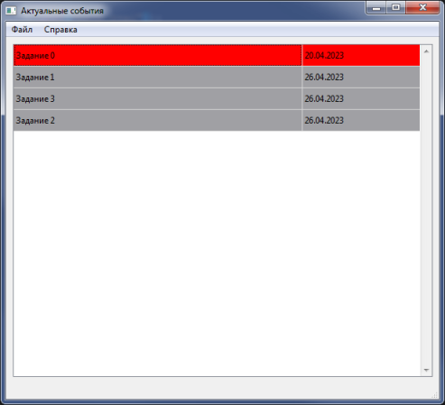
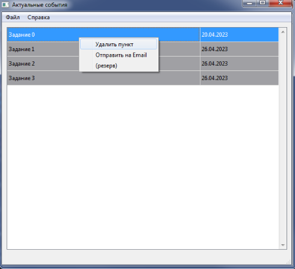
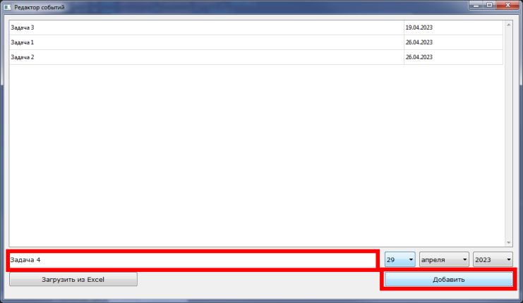
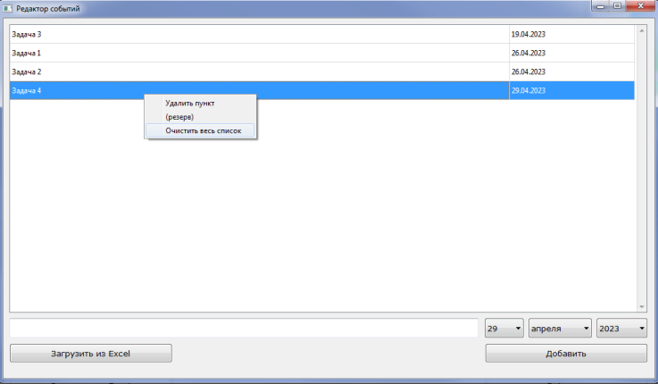
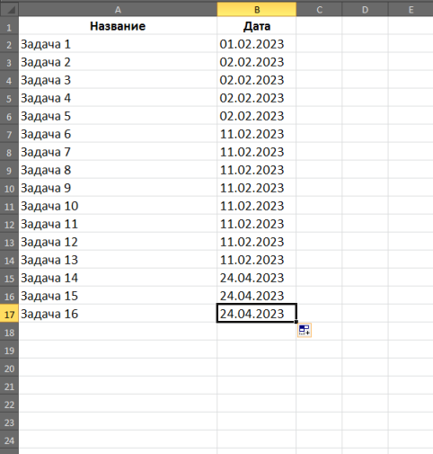
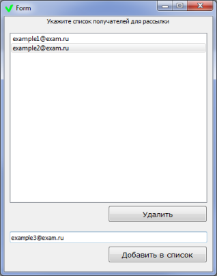
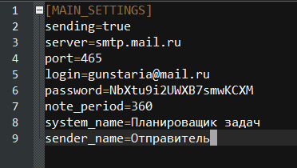

Краткое руководство:
Планировщик хранит в памяти события и выводит на главную форму те, которые совпадают с сегодняшней датой.
Актуальные события выделены серым цветом. Красным, цветом выделены прошедшие события, которые не были удалены из планировщика.

Чтоб удалить задачу из списка, необходимо выбрать пункт из списка, нажать Правую кнопку мыши и выбрать соответствующее действие.

Формирование перечня задач производится в редакторе, вызываемом из меню Файл -> Открыть редактор.
Чтоб добавить задачу, введите название в соответствующем поле и выберите дату.

Чтоб удалить задачу или же очистить весь список, необходимо выбрать пункт из списка, нажать Правую кнопку мыши и выбрать соответствующее действие.

Чтоб добавить задачи из таблицы Excel, нужно нажать на кнопку "Загрузить из Excel" и указать путь к файлу *.xls или *.xlsx.
Таблица в файле Excel подразумевает строгое соответствие правилам:
- первая строка : наименование столбцов
- следующие строки : текст задачи и дата в формате "ДД.ММ.ГГГГ"
- формат всех ячеек "Текстовый"

Приложение автоматически сохраняет изменения и загружает при следующем старте.
Чтоб задать список абонентов для рассылки, необходимо открыть форму, находящуюся в меню Файл -> Список получателей

Приложение осуществляет рассылку один раз в день (когда меняется дата на ПК), или по команде из меню.
Сервер рассылки, параметры сети, логин и пароль указываются в файле конфигурации config.ini и заполняются Администратором

Если что-то по какой-то причине не работает - не грустите и свяжитесь с автором приложения